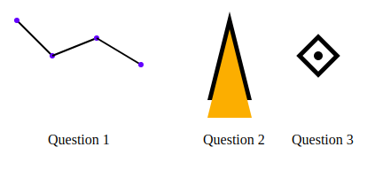

Scalable Vector Graphics are used for vector drawings on HTML pages. Familiarity with the tag namespace and its capabilities is useful for low-level drawing, which you can use in packages such as D3js.
SVG is incorporated into HTML through an extended tag namespace. Before exploring D3.js, we'll get a basic idea of some simple svg elements as they are used in HTML. Here's some references:
For this presentation, we'll be using:
We'll be embedding our svg code into our web page html using the <svg> tag.
Browse the source code of this page to identify the svg code for the following drawing:
The rect, circle, ellipse, line, polyline and polygon elements are stright-forward if
you have done any vector graphics or cartesian geometry. The explanation
of <path> is a little complex, with its own mini-language for path description as explained
in the w3schools tutorial
and the MDN tutorial. MDN lists
these commands as available for the path description (which is provided by the path d= attribute):
I copy the w3schools main examples here:
By using the group tag <g>, we can apply common attributes to every svg element in the group.
Groups are really useful in applying transformations to drawing elements. Available transformations include:
Let's draw a heart shaped path, and then draw the same path with some transformations applied:
Now we'll transform a <g>roup of those hearts:
A simple example of drawing a chart using svg rects is the raw svg code
sample.
lines, circle, path, transformation and other svg tags to draw the following images: (note
these are provided
as screenshot image so the source doesn't give away an answer!):

For an extra challenge, research and use the svg text element to add the text to the drawings.
| Source | What is it | How used |
|---|---|---|
| https://developer.mozilla.org/en-US/docs/Web/SVG/Tutorial/Basic_Shapes | svg tutorial | copied images and code |